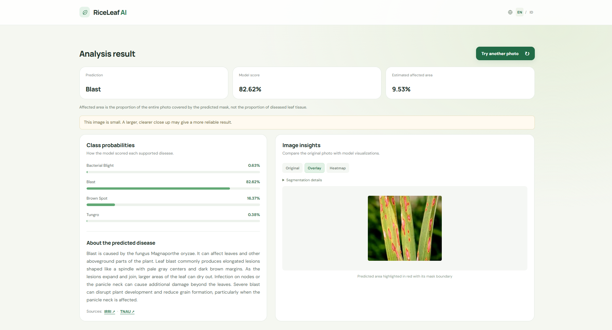

⌖
Every region holds information.
Segmentation helps reveal regions with possible signs of disease, directly on the leaf photo.
Highlighted regions · Example result
One photo to explore signs of rice disease. RiceLeaf helps you recognize possible symptoms and understand the regions that need attention.

From visible symptoms to initial insights you can review with an agricultural adviser or expert.
Segmentation helps reveal regions with possible signs of disease, directly on the leaf photo.
Compare model scores for the four supported diseases.
The model runs in your browser. Photos are not sent to a server for inference.
No app installation or account needed. Use a photo from your gallery or device camera.
Use a clear, focused photo with adequate light.
Follow the process illustration while the model prepares results.
Compare the prediction with the original photo and the plant's field conditions.
Segmentation maps possible signs. The classifier combines image context and region features to recognize disease.
EfficientNetB0 encoder · Nested skip connections
EfficientNetB0 → 1.280 × 10 × 10 feature map
1.280 global features
1.280 region features
Linear 18 → 32 · ReLU
Recognizes four rice diseases. It does not identify healthy leaves or check whether a photo shows a rice leaf. No highlighted area does not necessarily mean the leaf is healthy. Highlighted regions do not measure disease severity. Review the result alongside the plant’s condition and expert advice.
Developed by Wawu Tri Ambodo, RiceLeaf began as an exploration of rice leaf disease recognition. We are preparing product development through user feedback and opportunities for pilot testing.
For farmers, advisers, and organizations interested in exploring a RiceLeaf pilot.